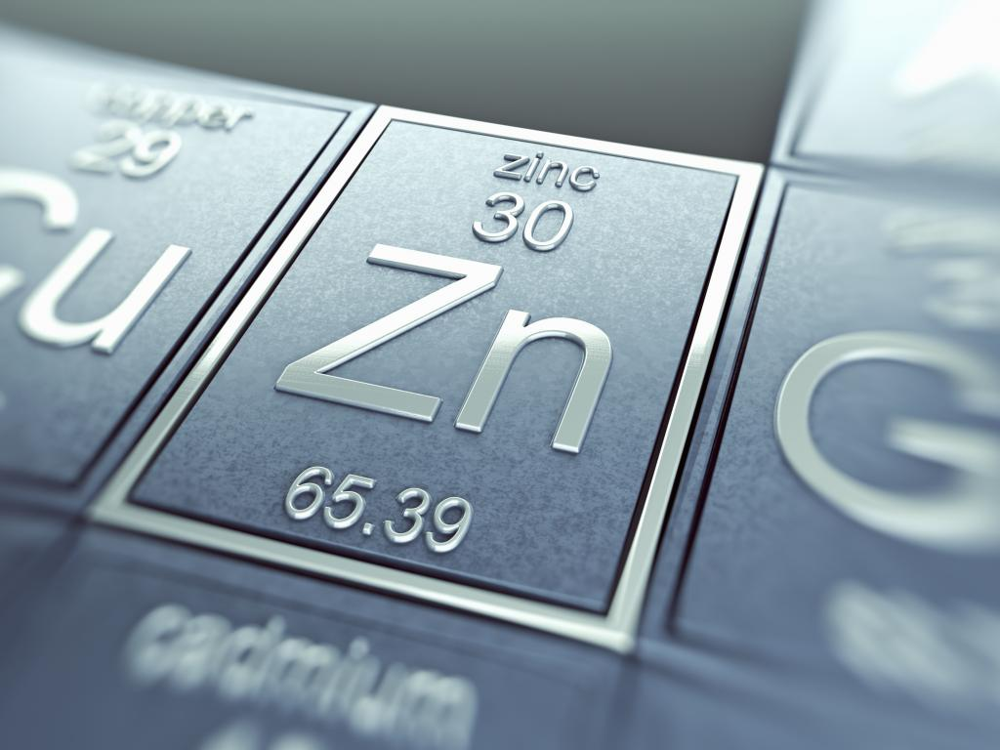
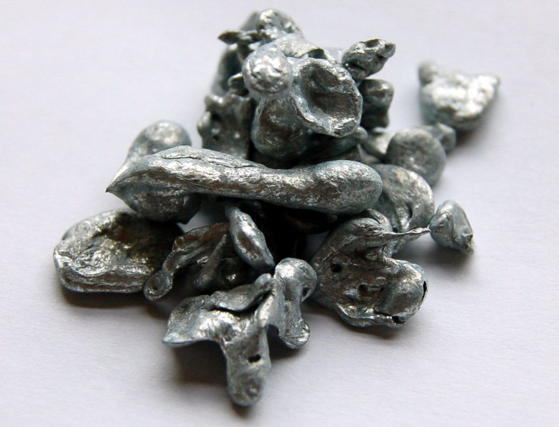

Цинк
Цинк (химический символ — Zn, от лат. Zincum) — химический элемент 12-й группы (по устаревшей классификации — побочной подгруппы второй группы, IIB), четвёртого периода периодической системы химических элементов Д. И. Менделеева, с атомным номером 30. Простое вещество цинк при нормальных условиях — хрупкий переходный металл голубовато-белого цвета (тускнеет на воздухе, покрываясь тонким слоем оксида цинка).
Сплавы цинка (латунь) были известны с глубокой древности (2400–2000 до н. э.). Получение латуни описал древнегреческий географ Страбон. Выделение металлического цинка при восстановительном процессе впервые осуществлено, по-видимому, в Индии в 13 в. н. э., затем в Китае, где в эпоху династии Мин использовались цинковые монеты. Промышленное производство цинка в Европе началось в 18 в. (Англия, Силезия, Бельгия). Происхождение названия элемента связывают с немецким Zinke – острие, зуб, благодаря внешнему виду металла.

Исходное сырьё – сульфидные цинковые и полиметаллические руды. Гидрометаллургический способ: огарок после обжига рудного концентрата обрабатывают отработанным электролитом, содержащим H2SO4. Полученный раствор ZnSO4 очищают от примесей Fe, As, Sb, Al, In, Ga, Сu, Cd, Ni и Со. Из очищенного раствора цинк осаждают электролитически на алюминиевых катодах. Отработанный электролит возвращают на выщелачивание. Из отходов, получаемых при удалении примесей, попутно извлекают редкие элементы. Пирометаллургическое производство также начинают окислительным обжигом, а затем агломерат восстанавливают углём или коксом, при этом цинк отгоняется, его пары конденсируют и подвергают многоступенчатой очистке от примесей. Для получения цинка высокой чистоты используют дистилляцию в инертной атмосфере или в вакууме, ректификацию и зонную перекристаллизацию в атмосфере Аr.
Основная область использования цинка – антикоррозионные покрытия железа и стали и получение сплавов. Цинк применяют в аккумуляторах и сухих элементах, в типографском деле, в металлургии при рафинировании Рb от Ag и Аu, для выделения Cd, In, Au из растворов цементацией, в качестве восстановителя в органическом синтезе.

Содержание цинка в земной коре 7,6·10–3 % по массе. Элемент относится к халькофилам, важнейшие руды – сульфиды. По мере разрушения горных пород цинк выщелачивался и осаждался в виде карбонатов, силикатов или фосфатов. Известно свыше 70 минералов цинка, из них важнейшие: сфалерит (цинковая обманка) – кубическая модификация ZnS, его светлая разновидность – клейофан и чёрная – марматит; вюртцит – гексагональная модификация ZnS; смитсонит ZnCO3; каламин (гемиморфит) Zn4[Si2O7](OH)2·H2O; цинкит (Zn,Mn)O, виллемит Zn2SiO4; франклинит (Zn,Fe,Mn)(Fe,Mn)2O4. Минералы цинка обычно ассоциируются с минералами Рb и Сu в полиметаллических рудах. Постоянные спутники цинка в рудах – рассеянные элементы Cd, In, Ge, Ga, Tl.